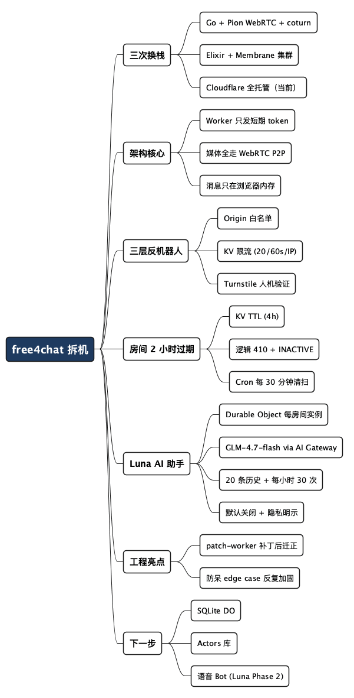

免费聊天室拆机：一个 WebRTC 项目如何在三次换栈后彻底"不养服务器"
Posted on 二 04 8月 2026 in Tech
| Abstract | 免费聊天室拆机报告 |
|---|---|
| Authors | Walter Fan |
| Category | Tech |
| Status | v1.0 |
| Updated | 2026-08-04 |
| License | CC-BY-NC-ND 4.0 |
周五晚上我把 free4chat clone 下来，本来只想看看它那个"不注册、不存数据"的语音聊天室是怎么做到的。结果顺藤摸瓜，发现最有味道的不是功能，而是技术栈那栏写着的三个分支：golang、elixir、还有现在默认的 cloudflare。
同一个产品目标，一路换掉了三次底层实现——第一次自建 Pion WebRTC + coturn，第二次上 Elixir 的 Membrane 集群，最后彻底躺进 Cloudflare，一台服务器都不碰。 产品没变，变的只有运维负担。这话说出来轻巧，背后的取舍值得拆开看。
这篇文章按代码讲它现在的样子：Worker 干了多少活、媒体为什么不落盘、房间凭什么两小时就死、反机器人怎么叠了三层、那个藏在 Durable Object 里的 AI 助手 Luna 是怎么长出来的，以及它给自己留了哪些后路。
顺手说一句：如果你也写过后端，看完大概会跟我想的一样——"serverless 不香"的反面，是"自己养一套 RTC 集群更疼"。 这是一次结结实实的用脚投票。
架构一句话：Worker 只发令牌，媒体全走点对点
先给个全局视角。整个项目一个 Worker 就装下了（Next.js 前端 + API 路由 + Durable Object 打包在一起），真正的实时能力和聊天室长得完全不一样。
普通聊天室长这样：客户端把消息发到一个中心服务器，服务器转发给房间里的其他人。free4chat 反过来——
中心的 Worker 只有一个职责：签发一张短期的认证 token。拿到 token 之后，所有语音、文字、文件、屏幕共享都走 WebRTC 的点对点数据通道，跟服务器没关系了。
app/src/pages/api/token.ts 就是这个被拆到不能再小的后端。浏览器打开房间，往 /api/token 发一个 POST（带房间名、昵称、想开的房间类型），Worker 拿着 Cloudflare API token 去 RealtimeKit 申请一个 meeting、再往里面加一个参与者，然后把参与者的鉴权令牌还给浏览器。剩下的事，交给 @cloudflare/realtimekit-react 这个 SDK 在浏览器里直接连 WebRTC。
所以消息、语音、文件——全都活在参与者的浏览器内存里。关掉标签页，什么证据都没有。 这正是这个产品"少即是多"的信心来源：不是靠承诺"我们不存"，而是从架构上就让它"没地方存"。
app/src/hooks/useChatRoom.ts 是整个前端的核心，403 行，一头扎进 RealtimeKit 的底层 meeting 对象，把参与者列表、消息流、静音、屏幕共享全用命令式的方式管起来。它是参与者的唯一事实来源——永远是整表重建，绝不局部补丁。
三次换栈：不是技术不香，是养不起了
README 里那张"Stack History"表，是我最想抄走的部分。
| 分支 | 技术栈 | 为什么换掉 |
|---|---|---|
golang |
Go + Pion WebRTC + coturn | 一个个人项目要自己养基础设施，太重 |
elixir |
Elixir + Membrane 框架 | 维护一个服务器集群，对这么小的项目还是太贵 |
cloudflare |
RealtimeKit + Workers | 全托管，file transfer 内置，免费额度够用 |
做过后端的人都懂那两行"为什么"的含金量。WebRTC 是个伟大的协议，但它把难题全堆在你头上：信令服务器、TURN 打洞、STUN、媒体面转发、带宽估计、NAT 穿透……在 Go 里用 Pion 把这些凑齐，不是做不到，是运维成本爆炸——而且是为了一个"开个房间聊两句"的聊天室。
Elixir + Membrane 的取向是对的（Actor 模型天生适合并发媒体），但还得自己跑集群、盯水位、处理回退。对个人项目来说，这是拿管理员的命换架构师的爽。
Cloudflare 这一版把"我没钱也不想养的麻烦"全部丢给了平台：RealtimeKit 管媒体面，Workers 管信令，Durable Object 管状态，KV 管元数据，Turnstile 管反机器人。预算从"白银一顿"降到"几乎为零"，还白送内置文件传输。
我自己做过 WebRTC SDK 的活，看到别人这么选，心里第一反应是：他这不是认输，是终于把有限的精力花在了刀刃上。能用平台把复杂度外包出去，是本事，不是偷懒。
三层反机器人：从"能防"到"默认开启"
一个匿名、无认证、任何人填个昵称就能进的语音房，天然是全网爬虫和骚扰脚本的靶子。所以 token.ts 里反机器人不是一层，是三叠。
- 来源白名单：校验浏览器的
Origin头，非浏览器、或者不是来自 free4chat 域的请求直接 403。这是第一道廉价的门。 - KV 限流：用
cf-connecting-ip在 KV 里记数，20 次/60 秒 / IP，超了就 429。 - Turnstile 人机验证：配置了
TURNSTILE_SECRET_KEY时，/api/token强制要求一个有效的 Turnstile token，否则 403。前端的TurnstileGate组件包住整个应用，第一次进是整页挑战，过了以后存在sessionStorage，同一次浏览器会话不再重复要。
有意思的是第三层的实现——它在 sessionStorage 存 token，等用户真的点了加入、token 被消费掉之后再回落到未验证状态重新挑战。代码里为此专门修过两回（commit 有：re-render Turnstile widget when token is consumed），属于那种"看着小、不修就出洞"的边界处理。
除了反机器人，输入也锁了：房间名 ≤ 64 字符、昵称 ≤ 32 字符、机器人消息 ≤ 1000 字符。云端的东西，能少信一份输入就少信一份。
房间为什么两小时就死：KV 加 TTL，再加一条定时删除
"免费"的代价是要控制成本，所以房间不能永生。README 说 2 小时过期，代码里是三样东西配合：
第一层，KV 记录的过期字段。 每个房间在 ROOMS_KV 里有个 room:名字 记录，写着 meeting id、创建时间和房间类型，写入时带上 4 小时的 expirationTtl（ROOM_KV_TTL_S = 4 * 3600）。到了时间 KV 自动把元数据抹掉。
第二层，逻辑过期。 token.ts 里 ROOM_MAX_AGE_MS = 2 小时，进来的人如果发现房间已经创建超过 2 小时，就回一个 410 "room expired"，并顺手调 RealtimeKit 把那个 meeting 标记成 INACTIVE，防止它赖着占资源。
第三层，防呆的 Cron。 wrangler.jsonc 里挂着一条 */30 * * * * 的定时任务，每半小时扫一遍，把该清理的彻底清掉。前端 useChatRoom.ts 里还有个倒计时+到期自动退房（doExpireLeave），用的是服务端返回的 expiresAt 而不是本地加入时间——这处坑踩得很典型：base countdown on server-side expiresAt instead of local join time，本地时钟是不可信的。
一件事用了 kv TTL、逻辑 410、Cron、客户端倒计时四重保险，还专门修了双退房（double-leave）、时钟漂移（timer drift）这些 edge case。一个"免费"得不能再免费的功能，防御却被反复加固——这正是我欣赏的工程态度：越是免费的东西，越不能让它偷跑。
藏在 Durable Object 里的 AI 助手 Luna
如果说前面的都是"防守"，Luna 就是产品里最"进攻"的一块——一个可选的 AI 助手，在聊天里 @luna 就能召唤。
它的关键是 Cloudflare 的 Durable Object。跟普通无状态 Worker 不一样，DO 是一个有持久状态的单点——同一把 key 的请求会被路由到同一个对象实例，这在多人聊天这种需要"一个人记得上下文"的场景里简直是为它量身定的。
app/src/do/BotSession.ts 的逻辑很干净：
- 用
BOT_SESSION.idFromName(房间的 meetingId+创建时间)得到一个每房间唯一的 DO 实例； - 它把
state.storage当数据库用，持久化两样东西：最近 20 条聊天历史（MAX_HISTORY）和一个每小时 30 次的限流计数（HOURLY_RATE_LIMIT）； - 拿到用户消息后拼上下文，丢给 Cloudflare AI Gateway 的 OpenAI 兼容端点，用
@cf/zai-org/glm-4.7-flash这个模型（智谱 GLM-4.7 的 flash 版）生成回答； - 回答里还专门
stripThinkTags()把模型可能吐出来的思考标签剥掉，免得污染聊天界面。
系统提示词写得很有产品感："KEEP REPLIES SHORT (1-3 sentences)、别用 markdown 表格和代码块、说中文就用中文回。"一个聊天室里的助手的权重很简单：别抢戏。
但它一个很妙的取舍是：Luna 是默认关的。 打开房间时你不勾选，botEnabled 就是 false，就算有人 @luna，api/bot.ts 也会回 403。因为启用 Luna 意味着把用户消息发给外部 AI 模型，这在隐私上是另一个量级——所以 README 和 UI 都把"数据会发给 AI 处理"这件事写得明明白白。能默认关闭的 AI，才配叫隐私友好的 AI。
一个让工程强迫症很舒服的部署细节
最后说一个纯工程的小事，但它能说明这个项目有多抠细节。
Cloudflare 的 opennextjs-cloudflare 打包后会自己生成一个 worker.js，忽略你在 wrangler.jsonc 里写的自定义 main。问题是 Luna 的 BotSession 这个 Durable Object 必须导出到 Worker 入口才能被绑定。于是项目早期写了个 scripts/patch-worker.mjs，在每次构建后把 BotSession.ts 用 esbuild 单独打成一个文件，再把 export { BotSession } 追加到生成的 worker.js 末尾——一个"绕过框架限制的补丁"。
做法很实用，但也很脆。后来社区出了官方支持的自定义 worker.ts 入口（refactor: replace patch-worker.mjs with official custom worker.ts entry point），他们就把补丁删了，换成正道。先 hack 顶上，等官方便利了就立刻迁走——这是对"技术债要记账"的最好示范：欠可以欠，但要记得还，且有还的路线图。
它留给自己的下一步（也是我们的启示）
DEVELOPMENT.md 的"Future Directions"写得克制又清醒：
- SQLite-backed Durable Objects：现在的
state.storage.get/put够用，数据模型真长大了再切state.storage.sql，还能解锁 Cloudflare Data Studio 在线调试数据——但没到那个量不折腾。 - Cloudflare Actors 库：更高层的 DO 抽象，有类型化 RPC，但也明确写了"当前规模无收益"。
- 语音 Bot（Luna Phase 2）：要用
@cloudflare/voice（STT→LLM→TTS）+ Cloudflare Calls 把音轨桥进 RTK，预估全 Cloudflare 延迟 700–900ms。这是把文字助手升级成能真人对讲的"语音版 Luna"。
这三条里有两条在说"现在别做"。 一个个人项目愿意在"还不需要"的时刻忍住不提前架构，这本身就值一行笔记。
读代码和验证运行是两回事
拆机时可以把证据分成三层：代码已经明确实现的行为，README 或提交记录声称的行为，以及必须部署后才能知道的线上指标。前两层适合做架构分析，延迟、成本、可用性和第三方日志则应明确标成“待运行验证”。
一个最小复现清单可以包括：固定一个 commit，按文档启动，分别测试正常加入、过期房间、重复领取 Token、未通过人机验证、AI 助手关闭和房间销毁。这样既能验证产品的主要路径，也能看出“默认不存数据”具体覆盖了哪些数据、没有覆盖哪些平台元数据。
Recap：从 free4chat 能带走什么
把这个项目读完，我脑子里存下的不是"又见了一个聊天室"，而是几个可复用的判断：
- 能外包的复杂度，别自己扛。 WebRTC 的痛不是协议难，是运维难。第三台服务器之前，先想清楚平台能不能替你把媒体面、信令、状态全管了。
- 隐私要做到"没地方存"。 不再强调"我们不存"，而是让数据在架构上根本没地方可存——媒体走 P2P、消息只进浏览器内存。
- 免费的东西更要防御。 匿名 + 免费 = 爬虫靶子。白名单、限流、人机验证照叠，输入长度照锁，房间 TTL 照设四重保险。
- 把用户数据交给 AI，要默认关闭 + 明示。
@luna默认不启用，要启用用户得自己勾，且一切写得清清楚楚。 - 先 hack 顶上，等正道来了就迁。 patch-worker 的补丁有生命周期，官方便利一到立刻换掉。
一句话：
做小而免费的项目，胜利不在功能炫技，而在把"不养服务器、不留数据、不挨薅"这三件难事，一次做扎实。
如果你也想看它是怎么把这三件事一次做扎实的，强烈建议 clone 一份：git clone https://github.com/i365dev/free4chat，认准 cloudflare 分支，重点读 app/src/pages/api/token.ts 和 app/src/do/BotSession.ts。
我唯一没能替你验证的是线上跑的延迟和成本数字——本地 clone 下来只管得了代码，够不到生产指标。你要是跑了，欢迎回来告诉我真实体验。
全文思维导图
@startmindmap
<style>
mindmapDiagram {
node {
BackgroundColor #F8F9FA
RoundCorner 10
Padding 10
FontSize 13
}
:depth(0) {
BackgroundColor #1E3A5F
FontColor white
FontSize 18
FontStyle bold
}
:depth(1) {
FontSize 15
FontStyle bold
}
:depth(2) {
FontSize 13
}
}
</style>
* free4chat 拆机
** 三次换栈
*** Go + Pion WebRTC + coturn
*** Elixir + Membrane 集群
*** Cloudflare 全托管（当前）
** 架构核心
*** Worker 只发短期 token
*** 媒体全走 WebRTC P2P
*** 消息只在浏览器内存
** 三层反机器人
*** Origin 白名单
*** KV 限流 (20/60s/IP)
*** Turnstile 人机验证
** 房间 2 小时过期
*** KV TTL (4h)
*** 逻辑 410 + INACTIVE
*** Cron 每 30 分钟清扫
** Luna AI 助手
*** Durable Object 每房间实例
*** GLM-4.7-flash via AI Gateway
*** 20 条历史 + 每小时 30 次
*** 默认关闭 + 隐私明示
** 工程亮点
*** patch-worker 补丁后迁正
*** 防呆 edge case 反复加固
** 下一步
*** SQLite DO
*** Actors 库
*** 语音 Bot (Luna Phase 2)
@endmindmap

本作品采用知识共享署名-非商业性使用-禁止演绎 4.0 国际许可协议进行许可。 欢迎在我的个人网站 https://www.fanyamin.com 访问原文并评论。